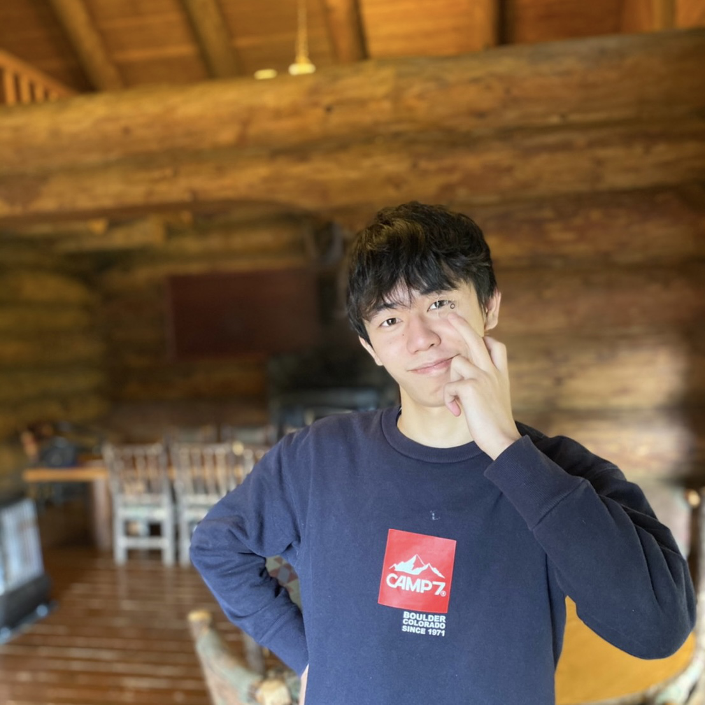

# 自己紹介
- Name : 山口 修平(YAMAGUCHI SHUHEI)
- University : 日本大学 (B3)
- Department : 理工学部
- Major : 電子工学
- ResearchContent : 半導体, IC系研究室
- HandleName : yamarico
- Circle : HaitLab(Primary 5th term)
# やったこと
- 42Tokyo(9/27〜10/23) : 入学試験
- 技育展 : 初めてのアウトプット1(SortFont (opens new window))
- JPHach : 個人応募部門(スキマ (opens new window))
- UnityでGame作っています.(製作中)
- ViewPressを使いNetlifyでデプロイしてこれを作りましたポートフェリオ (opens new window).
# Skill
- メインで使っているもの
| アイコン | 経験内容 | |
|---|---|---|
vscode | ||
github | ||
- 開発に少し使ったもの
| アイコン | 名前 | 経験内容 |
|---|---|---|
docker | ||
flask | ||
html | ||
- 触った程度のもの
- Unityエンジンの開発に使用. ゲーム開発に使う部分はある程度かける.
- C
- 42Tokyo入学試験時に使用, 簡単なアルゴリズムを構成できるレベル.
- Python
- サークルで機械学習, 深層学習について学び, 技育展で文字を使うというアウトプットを行なった.
- Flaskで簡単なapp開発経験がある.
- HTML/CSS/JavScript
- WebApp開発に使うCodePen, Semantic UIなどを埋め込み調べながら簡単なデザインを設計できる.
- SQL
- DataBase周りを勉強している発展途上
- LTspice
- 学校で習った.
- LabView
- 学校で習った.